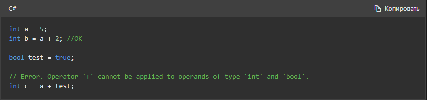
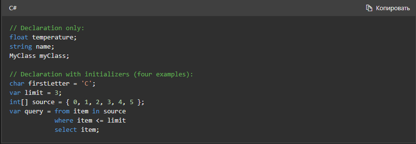
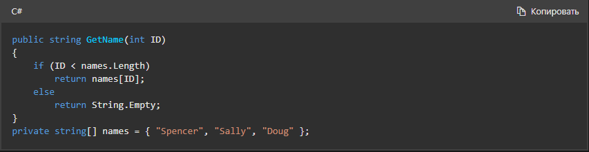
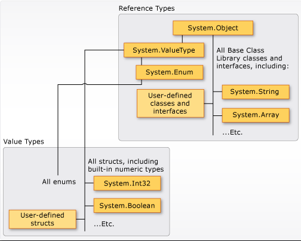

Testing C# является строго типизированным языком. Каждая переменная и константа имеет тип, как и каждое выражение, результатом вычисления которого является значение. Каждое объявление метода задает имя, тип и вид (значение, ссылка или вывод) для каждого входного параметра и для возвращаемого значения. В библиотеке классов .NET определены встроенные числовые типы и комплексные типы, представляющие разнообразные конструкции. К ним относятся файловая система, сетевые подключения, коллекции и массивы объектов, а также даты. Обычная программа на C# использует типы из этой библиотеки классов и пользовательские типы, которые моделируют уникальные концепции конкретной сферы применения.
В типах может храниться следующая информация:
- место, необходимое для хранения переменной этого типа;
- максимальное и минимальное значения, которые могут быть представлены;
- содержащиеся в типе члены (методы, поля, события и т. д.);
- базовый тип, от которого наследует этот тип;
- реализуемые им интерфейсы;
- разрешенные виды операций.
Компилятор использует сведения о типах, чтобы проверить, все ли операции, выполняемые в коде, являются типобезопасными. Например, при объявлении переменной типа int компилятор позволяет в дополнение использовать переменную и операции вычитания. При попытке выполнить эти же операции для переменной типа bool компилятор выдаст ошибку, как показано в следующем примере:
Компилятор внедряет сведения о типе в исполняемый файл в виде метаданных. Среда CLR использует эти метаданные во время выполнения для дальнейшего обеспечения безопасности типа при выделении и освобождении памяти.
Задание типов в объявлениях переменных
Когда вы объявляете в программе переменную или константу, для нее нужно задать тип либо использовать ключевое слово var, чтобы компилятор определил тип самостоятельно. В следующем примере показаны некоторые объявления переменных, использующие встроенные числовые типы и сложные пользовательские типы:
Типы параметров и возвращаемых значений метода задаются в объявлении метода. Далее представлена сигнатура метода, который требует значение int в качестве входного аргумента и возвращает строку:
После объявления переменной вы не можете повторно объявить ее с новым типом и назначить ей значение, несовместимое с объявленным типом. Например, нельзя объявить переменную типа int и затем присвоить ей логическое значение true. Но значения можно преобразовать в другие типы, например при сохранении в других переменных или передаче в качестве аргументов метода. Если преобразование типов не приводит к потере данных, оно выполняется компилятором автоматически. Для преобразования, которое может привести к потере данных, необходимо выполнить приведение в исходном коде.
Встроенные типы
C# предоставляет стандартный набор встроенных типов. Они используются для представления целых чисел, значений с плавающей запятой, логических выражений, текстовых символов, десятичных значений и других типов данных. Также существуют встроенные типы string и object. Такие типы доступны для использования в любой программе C#. Полный список встроенных типов см. в разделе Встроенные типы.
Пользовательские типы
Для создания собственных пользовательских типов используется structenumclassinterface, и record конструкции , а также конструкции. Сама библиотека классов .NET — это коллекция пользовательских типов, которые вы можете свободно использовать в приложениях. По умолчанию в любой программе C# доступны наиболее часто используемые типы из библиотеки классов. Чтобы сделать доступными другие типы, нужно явным образом добавить в проект ссылку на сборку, которая определяет их. Если компилятору предоставлена ссылка на сборку, то вы можете объявлять в коде переменные (и константы) любых типов, объявленных в этой сборке. См. дополнительные сведения о библиотеке классов .NET.
Система общих типов CTS
Важно понимать две основные вещи, касающиеся системы типов, используемой в .NET:
- Она поддерживает принцип наследования. Типы могут быть производными от других типов, которые называются базовыми типами. Производный тип наследует все (с некоторыми ограничениями) методы, свойства и другие члены базового типа. Базовый тип, в свою очередь, может быть производным от какого-то другого типа, при этом производный тип наследует члены обоих базовых типов в иерархии наследования. Все типы, включая встроенные числовые типы, например System.Int32 (ключевое слово C#: int), в конечном счете являются производными от одного базового типа System.Object (ключевое слово C#: object). Эта унифицированная иерархия типов называется Системой общих типов CTS. Дополнительные сведения о наследовании в C# см. в статье Inheritance (Наследование).
- Каждый тип в CTS определяется как тип значения либо ссылочный тип. Это справедливо и для всех пользовательских типов, в том числе включенных в библиотеку классов .NET или определенных вами. Если в определении типа используется ключевое слово struct, он является типом значения. Например, все встроенные числовые типы определены как structs. Если в определении типа используется ключевое слово class или record, он является ссылочным типом. Для ссылочных типов и типов значений используются разные правила компиляции, и они демонстрируют разное поведение во время выполнения.
Ниже показаны взаимоотношения между типами значения и ссылочными типами в CTS.
Классы и структуры являются двумя основными конструкциями системы общих типов CTS, используемой на платформе .NET. В C# 9 добавлены записи, которые представляют собой тип класса. Оба они являются структурами данных, которые инкапсулируют набор данных и поведений в одной логической сущности. Данные и поведение являются членами класса, структуры или записи. К ним относятся методы, свойства, события и другие элементы, которые описаны далее в этой статье.
Объявление класса, структуры или записи представляет собой своего рода чертеж, на основе которого создаются экземпляры или объекты во время выполнения. Если вы определите класс, структуру или запись с именем Person, то Person здесь обозначает имя типа. Если вы объявите и инициализируете переменную p типа Person, принято говорить, что p является объектом (или экземпляром) Person. Можно создать несколько экземпляров одного типа Person, и каждый экземпляр будет иметь разные значения свойств и полей.
Класс является ссылочным типом. Когда вы создаете объект типа и назначаете его переменной, эта переменная содержит только ссылку на память объекта. Если ссылка на объект сохраняется в новую переменную, эта переменная также ссылается на исходный объект. Изменения, внесенные через одну переменную, отражаются и в другой переменной, поскольку обе они ссылаются на одни и те же данные.
Структура (struct) является типом значения. При создании структуры переменная, которой присвоена структура, содержит фактические данные этой структуры. Если структура присваивается новой переменной, все данные копируются. Таким образом, новая переменная и исходная переменная содержат две отдельные копии одинаковых данных. Изменения, внесенные в одну копию, не влияют на другую.